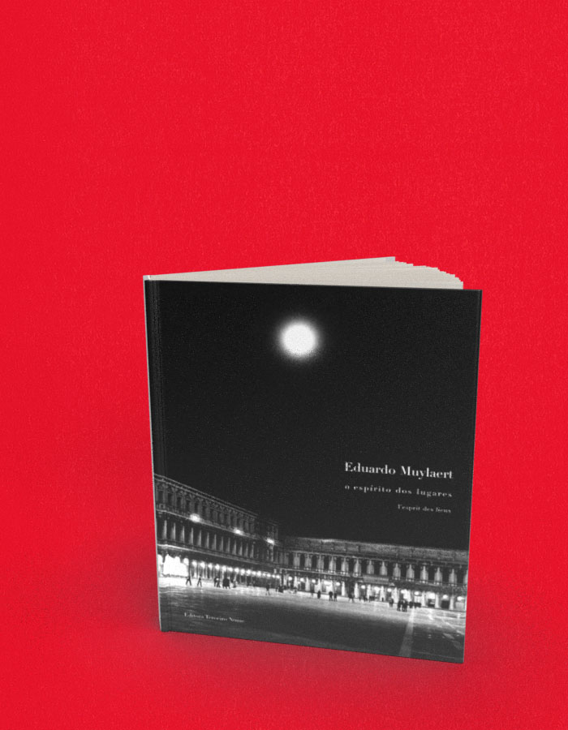

O espírito dos lugares
A compra acontece no site da livraria, em uma nova aba. Consulte lá os preços e a disponibilidade. Procure pelo título ou ISBN deste livro.
- Autoria / créditos
- Eduardo Muylaert
- Páginas
- 200
- Formato
- 28 x 23 cm
- Acabamento
- brochura
Sobre o livro
Com trabalhos em preto e branco, Eduardo Muylaert apresenta pela primeira vez em livro a sua trajetória pessoal no campo da fotografia. Resultado da observação constante e da criação livre dos espaços que sua câmera flagrou, a publicação traz uma releitura particular dos lugares por onde andou. No percurso de seu olhar, Veneza, Buenos Aires, New York, Paris, Arles, região da Toscana, São Paulo, Rio, Salvador e também a ferrovia de Curtiba a Paranaguá, a cachoeira de Aiuruoca, Goiás Velho, Fernando de Noronha, as árvores de Minas.
Eduardo Muylaert divide seu tempo entre a fotografia e seu escritório de advocacia. Como fotógrafo, tem recebido prêmios e participado de exposições como Focus in Your World, do Programa de Meio Ambiente das Nações Unidas (ECO-92), Tiras compridas do Brasil (Galeria Millan, SP, 1999), Paris de novo (BFB, SP, 1998), Nova Iorque (Bar Balcão, SP, 1997), Réplicas (Espaço Mirante, SP, 1996), Paris – Fragmentos 70/95 (Bar des Arts, SP, 1995), Transferências (Bar do MIS, SP, 1993), além de diversas exposições coletivas.
← Voltar ao catálogo